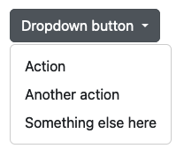

Een dropdown menu item op een website steunt zwaar op JavaScript
Het voorbeeld op deze website wordt door Bootstrap in combinatie met Popper geregeld.

Basisstructuur
De basisstructuur van een dropdown bestaat uit een container met de klasse dropdown, een knop met de klasse dropdown-toggle, en een lijst met de klasse dropdown-menu.
Werking
Extra functionaliteit
Bootstrap 5 biedt ook extra functionaliteit voor dropdowns, zoals het toevoegen van headers, scheidingslijnen en het uitschakelen van items.